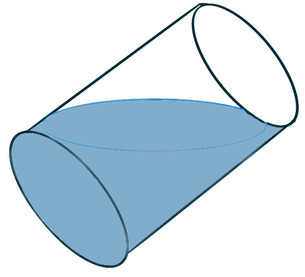

Consider the region enclosed by the curves
\(y=x^2\) and \(y=x^3\).
Consider the solid generated by revolving
this region about the \(y\)-axis.
First make a sketch this solid.
Like, really, make it look good.
Then write two different integrals,
one with respect to \(x\) and the other with respect to \(y\),
that represent the volume of this solid.
Calculate the values of these integrals
to verify their values are the same.
Do the same thing,
but this time considering the solid generated
by revolving the region about the \(x\)-axis instead.
Before doing any calculations,
anticipate whether this volume will be larger or smaller
than the previous volume.
Now suppose the region is the base of a solid
whose cross-sections parallel to the \(y\)-axis
are all equilateral triangles,
the hypotenuses of which lie in the region.
First make a sketch this solid,
Then calculate the volume of this solid.
Protip: sketch the base region “flat”, foreshortened on your paper,
then sketch the solid “above” it.
Consider a single instance of one of the regions
bound between the curves \({y = \sin(x)}\) and \({y = \cos(x).}\)
What is the volume of the solid formed
by revolving this region about the line \(y = 2?\)
Calculate formulas for the volumes
of these ubiquitous geometric solids.
A right circular-based cone
with height \(h\) and base radius \(r.\)
It being a “right” cone means that the cone’s “point”
lies directly over the center of its base.
A sphere of radius \(r.\)
(Hint: the curve \({y=\sqrt{r^2-x^2}}\) describes …)
A regular tetrahedron (d4) — a solid
with four sides that are each
an equilateral triangle of edge length \(\ell.\)
A regular octahedron (d8) — a solid
with eight sides that are each
an equilateral triangle of edge length \(\ell.\)
For each of the following solids described,
make a quality sketch of the solid and calculate its volume.
A solid whose base is the region bound by the curves
\(y = 1-x^2\) and the \(x\)-axis,
and whose cross section perpendicular to the \(y\)-axis
are isosceles triangles with height equal to
the length of their base.
Spivak
A solid that has circular base
with diameter \(\overline{AB}\) of length \(\ell\)
such that each plane that is perpendicular to \(\overline{AB}\)
intersects the solid in a square.
An object is being moved along an axis.
At \(x\) meters from its initial position,
a force of \(F(x) = x^2-\cos(3x) +2\) acts on the object.
What is the work required to move the object
from \(x=3\) to \(x=7\),
A cable with mass \(\frac 1 2\text{ kg/m}\)
is lifting a load of \(150\text{ kg}\)
that is initially at the bottom of a \(50\) meter shaft.
How much work is required to lift the load a quarter of the way up the shaft?
A \(2\,\mathrm{kg}\) model rocket
is loaded up with \(3,\mathrm{kg}\) of rocket fuel.
When launched the rocket rises off the earth
at a constant rate of \(111\,\mathrm{m/s}\),
expending fuel at a rate of \(0.25\,\mathrm{kg/s}\).
Write down an integral that represents
the amount of work done by the rocket
between launch and the moment the rocket runs out of fuel.
Challenges
A hole is drilled through the center axis of a sphere,
all the way through the sphere,
such that the resulting tunnel is 6” long.
The resulting solid resembles a napkin ring.
What is the volume of this solid?
For a length \(r,\)
imagine a right circular-cone
with base radius \(r\) and height \(r\)
nested inside a half-sphere of radius \(r\)
nested inside a right circular-cylinder
with base radius \(r\) and height \(r.\)
Show the ratio of their volumes is \(1:2:3.\)
Cavalieri’s Principle
What is the volume of a circular-based cone
with height \(h\) and base radius \(r\)
whose “point” does not lie over
the center of its base?
Consider two intersecting circular cylinders,
each of of radius \(r,\)
whose central axes intersect at a right angle,
Calculate the volume of the solid
that is the intersection of these cylinders.
You have a bowl full of water, the shape of which
is exactly half of a sphere of radius \(r\).
You tilt the bowl thirty degrees, spilling out some of the water.
What is the volume of the remaining water?
A cylindrical glass of radius \(r\) and height \(L\)
is filled with water and then tilted until the water
remaining in the glass exactly covers its base.

Determine a way to “slice” the water
into parallel rectangular cross-sections and then set up a
definite integral for the volume of the water in the glass.
Determine a way to “slice” the water
into parallel cross-sections that are trapezoids and then
set up a definite integral for the volume of the water.
Calculate the volume of the water in the glass
by evaluating one of the integrals you set up.
Then figure out volume of the water in the glass
simply by considering the geometry of the situation.
Suppose the glass is tilted until the water
exactly covers half the base.
In what direction can you “slice” the water into triangular cross-sections?
Rectangular cross-sections?
Cross-sections that are segments of circles?
Find the volume of water in the glass.
A clepsydra, or water clock,
is a glass container with a small hole in the bottom
through which water can flow. The “clock” is calibrated
for measuring time by placing markings on the container
corresponding to water levels at equally spaced times.
Let \(x = f(y)\) be continuous on the interval
\([0, b]\) and assume that the container is formed
by rotating the graph of \(f\) about the \(y\)-axis.
Let \(V\) denote the volume of water and \(h\)
the height of the water level at time \(f\).
Determine \(V\) as a function of \(h\).
Show that \( \dot{V} = \pi \big(f(h)\big)^2 \dot{h} \,.\)
Suppose that \(A\) is the area of the hole
in the bottom of the container.
It follows from Torricelli’s Law that the rate of change
of the volume of the water is given by
\( \dot{V} = kA \sqrt{h} \)
where \(k\) is a negative constant.
Determine a formula for the function \(f\)
such that \(\dot{h}\) is a constant \(C\).
What is the advantage in having \(\dot{h} = C\)?